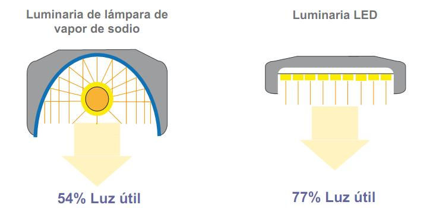
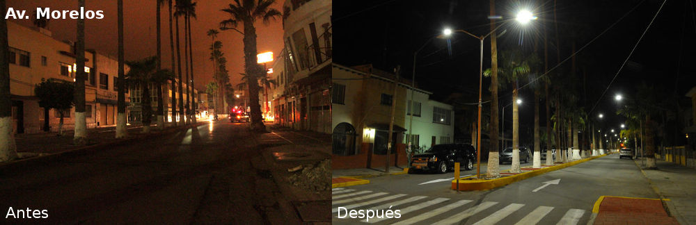

Las ciudades buscan crear una identidad y definirse como lugares exclusivos, bellos y seguros. La luz blanca de calidad puede transformar el paisaje nocturno, realzando la arquitectura urbana y creando ambientes acogedores que inviten a las personas a pasar más tiempo en ellos. También previene accidentes y hace más seguras las carreteras.
Actualmente diversos municipios en México se encuentran en el proceso, o planeando un proyecto para migrar su tecnología de iluminación pública hacia las luminarias de LED (light-emitting diode).
El argumento de la migración es generalmente el menor gasto de energía.
Los proveedores garantizan un ciclo de vida de entre 5 y 10 años para las lámparas, el municipio espera que estas funcionen al 100% durante los años previstos, y la población, conociendo que la inversión fue elevada, espera recibir beneficios tanto en iluminación, como en complementarios derivados del ahorro.
Los ledes en alumbrado público traerán ahorros de hasta 60%. Con el programa se conseguirá un ahorro energético en el pago de electricidad que realizan los municipios.

Con la ejecución de la nueva norma oficial mexicana NOM-031-ENER-2012 para regulación de las lámparas de diodos, mejor conocidas como LED, en el alumbrado público se conseguirá un ahorro energético de hasta 60% en el pago de electricidad que realizan los municipios en el país y que son los que más retrasos y endeudamientos mantienen con la Comisión Federal de Electricidad.
México es el primer país en el continente americano en elaborar una especificación obligatoria para regular las luminarias de LED destinadas al alumbrado de áreas exteriores públicas y a las vialidades y que "con la aplicación de esta Norma los consumidores, entre ellos los municipios del país, se verán beneficiados al contar con tecnologías de iluminación que contribuyen a disminuir la facturación eléctrica con mejores estándares de eficiencia energética".
Esta Norma Oficial Mexicana establece el cumplimiento de las siguientes especificaciones en los ledes al servicio del alumbrado público: eficacia luminosa mínima, relación del flujo luminoso total nominal, temperatura de color correlacionada, flujo luminoso total mínimo mantenido, resistencia a la conmutación, índice de rendimiento de color y factor de potencia, entre otros.
Actualmente el municipio de Torreón cuenta con un 97.37% de viviendas con acceso a alumbrado público en su manzana, de acuerdo al Censo de Población y Vivienda 2010 de INEGI.
El municipio de Torreón a partir del día 3 de junio del 2014 que se otorgó el acta de fallo de la licitación para el otorgamiento de la concesión del servicio de alumbrado público, ha estado trabajando en la reconversión de luminarias de vapor de sodio a led, las primeras instaladas fueron en la Avenida Morelos y en la Calzada Colón.
Al día 2 de febrero del 2015 se llevan instaladas 21,389 luminarias lo cual representan un 36.78% de avance general del proyecto, se ha trabajado en 188 colonias y 38 vialidades principales.

“El verdadero progreso es el que pone la Tecnología al alcance de todos”
Henry Ford